The one that feels the whole web. Promotion-abuse rings are invisible order by order — the fraud lives in the connections between accounts. Orbweaver finds them in the graph, and reports what it costs to be wrong about them.
make reproduce; none is typed in by hand — this page is quoted,
not retyped, from README.md. Rupee figures use
stated assumptions, because the dataset ships no monetary amounts, so they
rank options against each other and mean nothing absolute. Built for the
Razorpay AI Buildathon, Track 02 — my submission to their buildathon, not a
Razorpay product.A group running many accounts through one delivery-app promotion looks fine order by order; the fraud only exists in the connections between the accounts, which a detector scoring one transaction at a time cannot see. Pruning to suspicious accounts, then peeling for dense structure, catches them at 0.7292 ring precision against a base rate of 0.2242 — 3.252× chance — at a measured cost of 0.371 real customers swept into a ring for every fraudster it catches.
The finding I would defend hardest: dense is not the same as fraudulent, and it replicates on every unrelated dataset I have tried it on. Unpruned, the same extractor lands below chance here (0.31×) and at exactly zero on YelpChi - 25 rings, 1,914 accounts, 0 of them fraudulent. Pruned first, the identical code reaches 14.3× on Amazon reviewers and 6.9× on YelpChi reviews - three platforms, two of them nothing like promotion abuse, saying the same thing (why this matters).
The problem. A delivery app gives ₹100 off your first order. A group runs fifty accounts between them and takes ₹5,000. Every order looks normal on its own — the fraud only exists in the connections: a shared address, a shared device, one UPI ID paying for all of them.
Why nothing on the shelf catches it. Thirdwatch scores "the probability of the order being fraudulent" — per order. Vulcan runs a transformer over ~3,000 signals — per transaction. A ring is invisible to both, because a ring is not a property of any order. I checked rather than assumed: as of 2 September 2026, every Sprint 2026 fraud launch is scoped to a transaction, a chargeback or an identity. Nothing graph-level exists.
The approach. Score accounts once, prune to the suspicious region, then let a densest-subgraph algorithm with a proved bound decide ring membership — so "why is this account in this ring?" is checkable arithmetic, not a model's opinion. Each ring ships as a case file with evidence, rupees at stake, and the cost of being wrong.
Keywords: fraud-detection graph-algorithms densest-subgraph anomaly-detection payments fintech xgboost python reproducible-research
PPA is the only public, labelled promotion-abuse-ring dataset I could find — not the best one, the only one — and I never modified it, because a detector's numbers are only honest if the ground truth they are checked against is real. The full case for why this is still the right dataset to have started from, what its own paper claims that the release does not support, and how the hostel test and three unrelated datasets test the method past PPA, is in docs/why-this-data.md.
| Feature | What it does | |
|---|---|---|
| 🕸 | Multi-relation graph | Edges weighted by entity rarity × measured fraud lift, fitted on training accounts only |
| ✂️ | Prune, then peel | Score cut-off first, then greedy peeling with a ½-approximation bound |
| 🔍 | Evidence per ring | Shared entities, coverage, platform-wide rarity, day concentration, ₹ at stake |
| ⚖️ | Cost always attached | Every precision number ships with real customers swept in per fraudster caught |
| 🎯 | Capacity-aware policy | Exact knapsack over reviewer minutes → review / auto-hold / ignore, with both numbers |
| 🌙 | Anchored nightly replay | Stable case ids so tonight's ring is recognisably tomorrow's case |
| 🖥 | Live analyst console | FastAPI + HTMX: queue, case files, offers, account lookup, replay. No build step |
| ♻️ | Reproducible | make reproduce regenerates every number, table and figure. Nothing typed by hand |
| 📓 | Honest failure log | 36 dated entries — what broke, what I believed, why it was wrong |
| Layer | Technology |
|---|---|
| Language | Python 3.11+ (developed on 3.13) |
| Graph & algorithms | python-igraph, NumPy · greedy peeling + Fast Belief Propagation, hand-written |
| ML | XGBoost (isotonic-calibrated) · GraphSAGE (reported alternative) · scikit-learn |
| Data | pandas, PyArrow/Parquet, pydantic-validated YAML config |
| Console | FastAPI + HTMX, server-rendered — no npm, no bundler |
| Reporting | Matplotlib; Markdown + HTML generated by eval/report.py |
| Testing / CI | pytest · GitHub Actions on every push |
| Hosting | Vercel (console) · GitHub Pages (docs & evidence) |
Replayed one night at a time for the nightly numbers: rings are anchored around fixed accounts so a case found tonight is recognisably the same case tomorrow, not a fresh one every morning.
docs/architecture.md · docs/design-decisions.md| Stage | What happens | Why it is done this way |
|---|---|---|
| Sources | PPA (only public labelled promotion-abuse ring dataset) + Amazon, YelpChi, IEEE-CIS as transfer checks | One dataset proves nothing about a method. Why this data → |
| Cleaning | Schema validation; entity capping via N_max. No relabelling, no augmentation, no dropped outliers | A labelled evaluation is only worth something if the labels were set by someone with no stake in the result |
| Features | Graph edges as alpha_r / log(2 + users(e)); 39 account features | alpha_r is measured fraud–fraud lift per relation, fitted on training accounts only |
| Training | XGBoost + isotonic calibration. Strictly temporal split — week 1 trains, week 2 tests | Random node splits leak. tests/test_split_no_leak.py fails the build if one appears |
| Alternatives | GraphSAGE (mini-batch, CPU-deterministic) and Fast Belief Propagation, run at every label budget | Reported beside XGBoost whichever way they fall — and one of them wins |
| Evaluation | Ring precision vs base rate · FP cost · held-out AUPRC · hostel test · adversarial fragmentation | Precision alone is not a deployable number |
| Stage | Learned? |
|---|---|
| Graph construction, edge weighting | No — arithmetic over measured per-relation lift |
| Account scoring | Yes — XGBoost, the only learned component |
| Ring extraction | No — deterministic peeling with a proved bound |
| Evidence, ₹ at stake, FP cost | No — counting and stated arithmetic |
| The decision to act | No — a human reads the case file |
A model scores accounts. It does not decide who is in a ring. No language model sits anywhere in the detection or decision path. → docs/design-decisions.md
All 13 investigations, including
the four that came back negative, generated by make reproduce
from the run in data/processed/.
| Graph | 35,701,750 edges over the accounts active in the scoring window |
| Ring precision | 0.7292 against a base rate of 0.2242 — 3.252× |
| Cost of that | 0.371 real customers placed in a ring per fraudster caught |
| Without the score cut-off | 0.0696 — 0.31×, i.e. worse than picking at random |
| Account scorer | AUPRC 0.3796 on held-out accounts, 1.693× random |
| Three relations I cannot rebuild | worth +0.122 precision and +269 fraud accounts on the authors' own graph |
| Hostel test | 2 of 2,446 legitimate co-located groups touched (0.08%) |
| The relation only a platform can see | worth +0.024 to +0.038 ring precision at equal review capacity (250-500 accounts) |
| Time to detection, replaying night by night | median 4 of 4 nights; 33.4% of a ring's spend still ahead of it when it is found |
| Ranking rings by confidence | the mean member score wins at 200 rings (0.6739) — a trained ring model gets 0.5989, density 0.5814 |
| Yesterday's rings as a feature | +0.0011 AUPRC — it reaches 0.15% of held-out accounts. /check answers in 0.01 ms at the median |
| Behaviour edges against fragmentation | +0.0237 ring precision when the ring is split into threes, -0.0023 when it is split into twenties |
| The same method on a payment processor's graph | 0.5079 precision, 18.138× its base rate, at 0.969 good cards per fraudulent one caught |
| What one analyst an hour a night stops | ₹67,900 of promotion value against ₹200 for working the queue in order, for ₹16,040 of legitimate value harmed (assumed rupees) |
| Telling a crowd from a ring by when it formed | burst-weighted ring precision -0.0149 on PPA; on IEEE-CIS the apartment-cluster weakness is unchanged at 4 of 7 touched at every resolution tried |
| Which offers are being farmed | top 50 offers by size (325,494 accounts) cover 7.1% of all labelled fraud, 19.7x the 0.36% ring recall ceiling |
| How many confirmed cases before this works | prune-then-peel first beats the base rate at 1,146 confirmed accounts (0.5% of the training pool) |
| Spreading what few labels there are | Fast Belief Propagation, no fitted model: 0.4615 held-out AUPRC at full labels, 0.9886 ring precision pruning on its beliefs alone |
| A ring you can find again tomorrow | 44% of final rings had a case open the night before (global peeling: 4%); 0.7167 precision against 0.7292 for the cost of a case id |
| # | Finding | Outcome |
|---|---|---|
| 1 | Dense ≠ fraudulent. Unpruned, the densest subgraphs are ordinary communities and precision lands below base rate. Replicates on Amazon (14.3×) and YelpChi (6.9×) | ✅ the one I'd defend hardest |
| 2 | The biggest relation carries the weakest signal. Promotion edges: 70% of the graph, 1.76× lift. Location: 16%, 3.71× | ✅ drives edge weighting |
| 3 | The cross-business link is worth measuring, not assuming. Removing it costs 2–4 points of precision on YelpChi | ✅ replaced a simulation |
| 4 | One night is worth nothing, and rings don't survive it. No final-night ring had a predecessor — until anchoring fixed it (44% vs 0%) | 🔁 failed, then fixed |
| 5 | The crudest baseline beat the model built to replace it. 90.6% of candidate rings are already fraudulent — nothing to separate | ❌ negative |
| 6 | Ring history doesn't transfer to the next window. +0.0011 AUPRC; the feature is non-zero for 0.15% of accounts | ❌ negative |
| 7 | Behaviour edges raise the price of fragmentation without defeating it. +0.0237 at cells of three, nothing at twenty | ⚠️ partial |
| 8 | Transfers to a payment processor — and its weak point moves too. 0.5079 at 18.1×, but 4 of 7 apartment clusters touched | ⚠️ transfers, with a cost |
| 9 | The analyst isn't the bottleneck I built for. 30 vs 240 analyst-minutes stops the same fraud; time buys a 39% fall in harm | ✅ surprising |
| 10 | Burstiness didn't separate a crowd from a ring. −0.0149 on PPA; same 4-of-7 weakness at every time resolution | ❌ clean null |
| 11 | Offer leakage splits into precision vs coverage. 50 offers by leakage cover 0.04% of fraud; by size, 7.1% | ✅ a capacity decision |
| 12 | You don't need many labels to start. Beats base rate at 1,146 confirmed accounts (0.5% of the pool) | ✅ |
| 13 | A method with no fitted model beat both learned scorers. FaBP 0.4615 vs XGBoost 0.3796 — but trails until 50% of labels | ✅ hypothesis wrong, result right |
At the score cut-off this project uses (τ = 0.5), this is ring precision as λ moves the peeling objective from pure structure (λ = 0) toward weighing the account scorer's opinion more heavily. The same numbers are in the table above and, alongside every tau, in docs/results.md.
| λ | ring precision | real customers per catch |
|---|---|---|
| 0.0 | 0.6646 | 0.505 |
| 0.5 | 0.6658 | 0.502 |
| 1.0 | 0.7021 | 0.424 |
| 2.0 | 0.7014 | 0.426 |
| 5.0 | 0.7292 | 0.371 |
| Limit | Detail |
|---|---|
| Not Indian data | PPA is Chinese food delivery. The method is data-agnostic; the numbers are not. The hostel test is the closest proxy — real validation needs Indian data |
| Transfer runs are weaker | Amazon/YelpChi ship no timestamps (account-disjoint, not forward in time) and do ship node features PPA lacks — their higher numbers say more about the datasets |
| The release ≠ the paper | Test week only: 3,267,961 accounts, 10,012,449 edges — not 5.69M/29M. Three of eight relations are empty in the order files. Measured here |
| ₹ rests on assumptions | PPA ships no monetary amounts. The ₹ columns rank options against each other; they mean nothing absolute |
| Ring recall is low by design | Rings surface a few hundred accounts for review, not the population. A queue asks what share of what it looks at is worth looking at |
| Baselines aren't like-for-like | Published baselines have no account holdout and count unlabelled as negative. Both conventions are reported |
All 16 of them, regenerated by
make report; the exact captions in
docs/results.md.
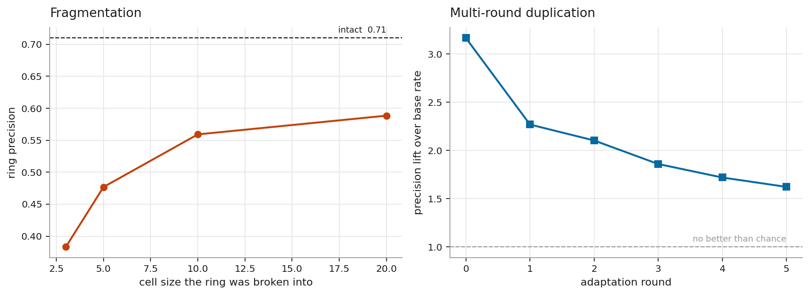
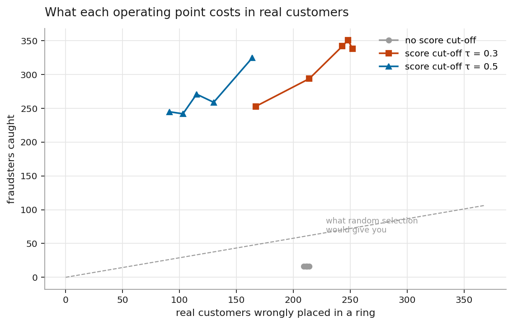
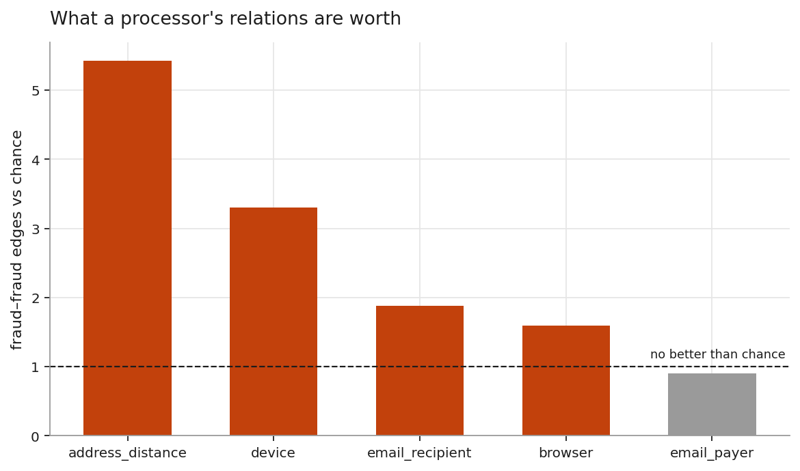
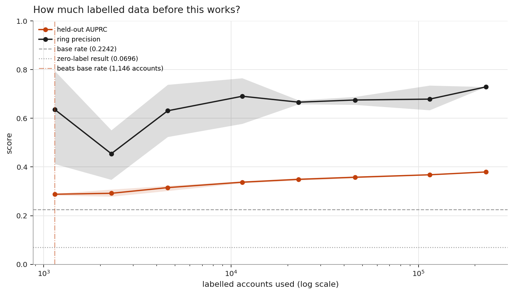
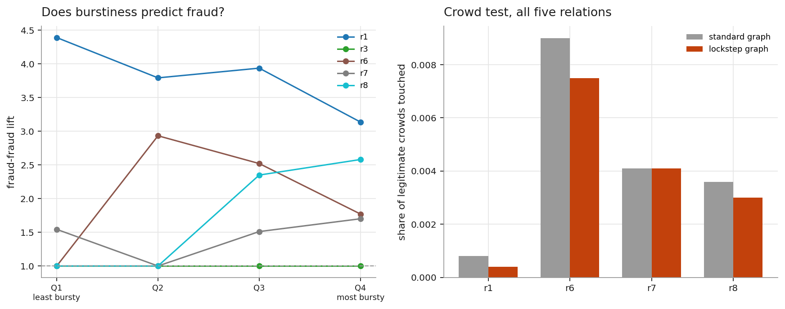
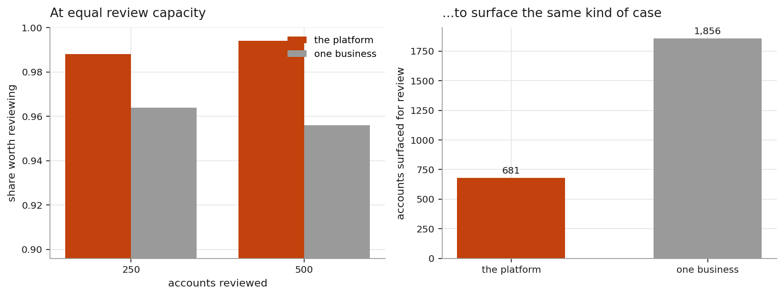
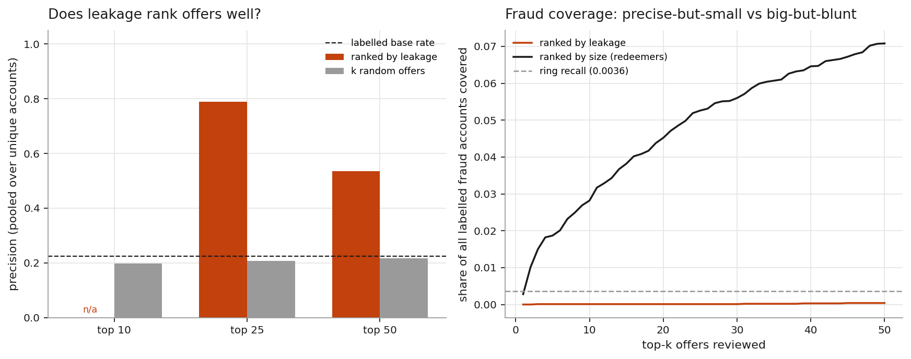
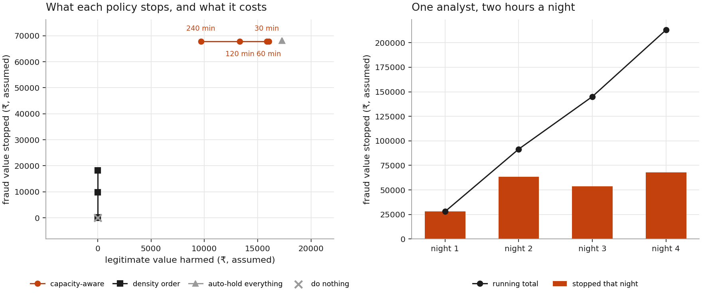
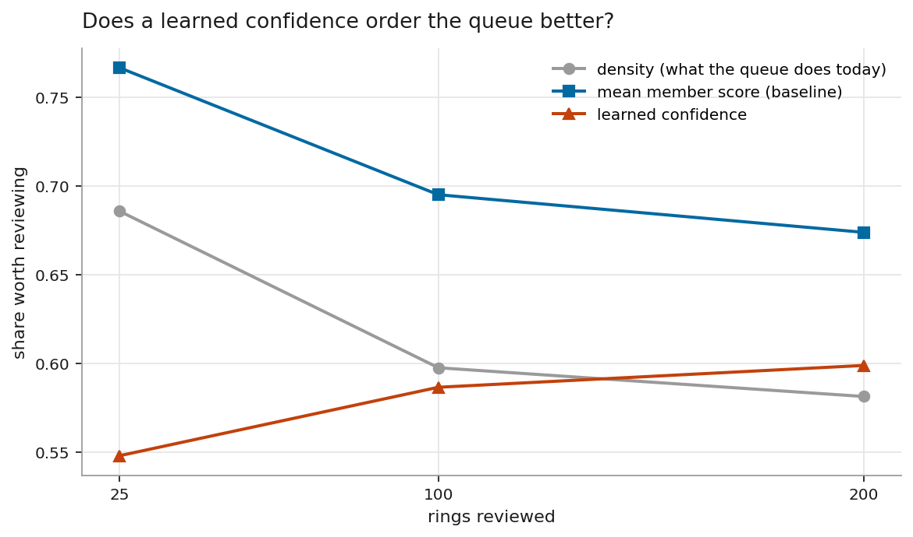
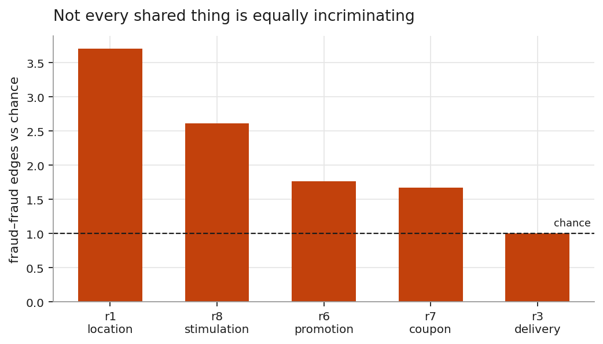
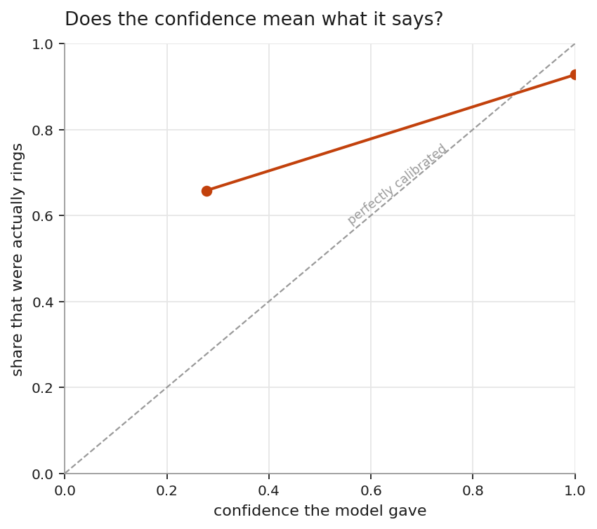
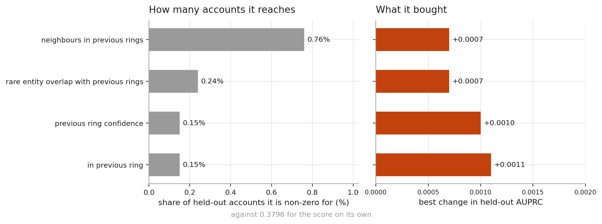
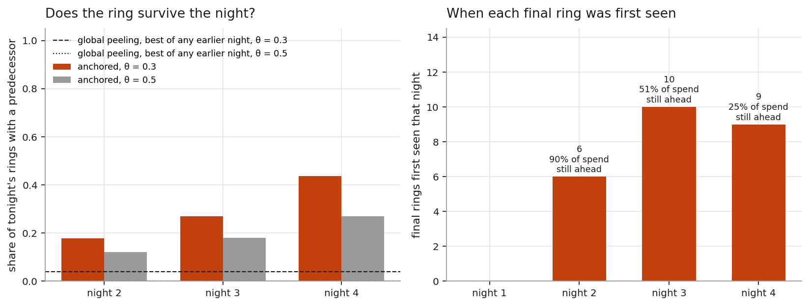
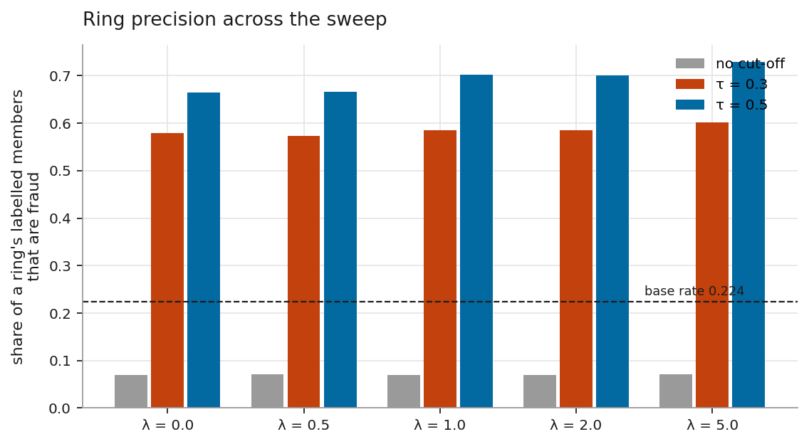
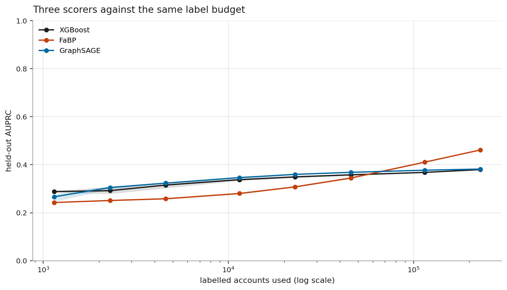
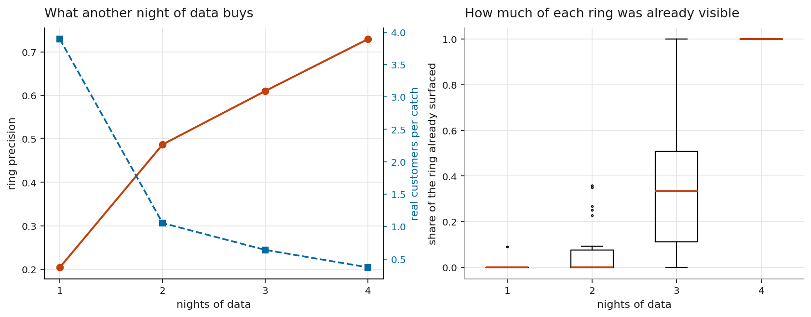
The five that mattered, out of FAILURES.md's full, dated log — the file I would read first if someone handed me this repository.
make reproduce worked on my machine and nowhere else | | 3 September | A feature that is zero for 99% of accounts cannot help | | 3 September | The model I built lost to the baseline I almost did not run | | 3 September | Rings do not survive the night | | 2 September | The one part of the pipeline that was not reproducible | | 2 September | I gave up on the generalisation check too early | | 2 September | I could not run the authors' checkpoint, and stopped trying | | 2 September | The densest groups were the innocent ones | | 2 September | The extractor found a ring with 31,555 members | | 2 September | The subsample quietly destroyed the rings | | 3 September | I measured two systems at two different budgets and read the sign backwards | | 3 September | Behavioural edges helped most where the graph was already ruined | | 3 September | The most useful relation is the one that ties innocent people together | | 3 September | make reproduce wrote a third of the report before the work existed | | 3 September | The hand-written pages drifted, and the generated ones did not | | 3 September | I set up the same unfair comparison twice | | 3 September | I built a review queue for a reviewer who turns out not to be the bottleneck | | 3 September | I shipped a demo that could not possibly work | | 3 September | A display cap quietly deleted a feature | | 3 September | I fixed the ordering bug and left half of it broken | | 4 September | The null model I built to remove a size bias had one of its own | | 4 September | A function nobody had called on an empty relation | | 4 September | Time did not separate the hostel from the ring, even where the data gave it every chance to | | 4 September | "every offer" turned out to mean five million rows, most of them noise or a default value | | 4 September | I persisted the wrong five hundred offers for the page that ranks them by leakage | | 4 September | I called a single noisy step "diminishing returns" | | 4 September | I capped a homophily factor exactly on the boundary the theorem excludes | | 4 September | Propagation lost when labels were scarce, and only won once they were not | | 4 September | The fresh clone caught a number my own machine had stopped producing | | 4 September | The badge at the top of the README had been red for three days | | 4 September | The fix for a false positive only ever worked by accident | </details>| Work | What it contributed here |
|---|---|
| PromoGuardian / PPA, IEEE S&P 2026 · arXiv · data | The labelled dataset everything is measured against. No code or checkpoint reused |
| Charikar, APPROX 2000 | The ½-approximation the peeling objective relies on |
| Hooi et al., FRAUDAR, KDD 2016 | Camouflage-resistant weighting; the bound for the node-prior objective |
| Bahmani, Kumar & Vassilvitskii, VLDB 2012 | Batch peeling — how rings get extracted at 35.7M-edge scale |
| Khuller & Saha, ICALP 2009 | The NP-hardness result motivating approximation over exact search |
| Xu, Ma, Fang et al., SIGMOD 2023 | The empirical bound cited for greedy peeling under a size ceiling |
| Dai et al., Anchored Densest Subgraph, SIGMOD 2022 | The anchored formulation that makes a case survive the night |
| Greene, Doyle & Cunningham, ASONAM 2010 | Life-cycle events and the Jaccard threshold for case identity |
| Koutra et al., ECML-PKDD 2011 | Fast Belief Propagation, implemented as specified — and it beat the learned scorer |
| Beutel et al., CopyCatch, WWW 2013 | The lockstep-in-time argument the burstiness arm tests |
| Tang et al., GADBench, NeurIPS 2023 | Why this starts with gradient boosting; two of the transfer datasets |
| Dou et al., CARE-GNN, CIKM 2020 | The Amazon and YelpChi releases used unchanged as a transfer check |
| Razorpay, Thirdwatch | The per-order framing this complements rather than replaces |
| Doc | Read it if… |
|---|---|
docs/results.md | You want every number and all 16 figures |
docs/why-this-data.md | You're asking "why this dataset, and is it trustworthy" |
docs/architecture.md | You want the five stages in depth |
docs/design-decisions.md | You want the ML boundary, and why it sits there |
docs/data.md | You want the raw release measured file by file |
docs/threat-model.md | You want what it catches, misses, and how to evade it |
FAILURES.md | You want the honest log. Start here |
ETHICS.md | You want the scope boundary in six lines |
A clone, six packages and one command — no dataset download needed, because the repository carries the computed results as a bundle.
git clone https://github.com/adarshcod30/Orbweaver
cd Orbweaver
pip install -r requirements-demo.txt
make console # http://127.0.0.1:8000The bundle is 1.69 MB, so the live console and a fresh clone both run with no dataset present at all. The full pipeline from raw data is make reproduce.